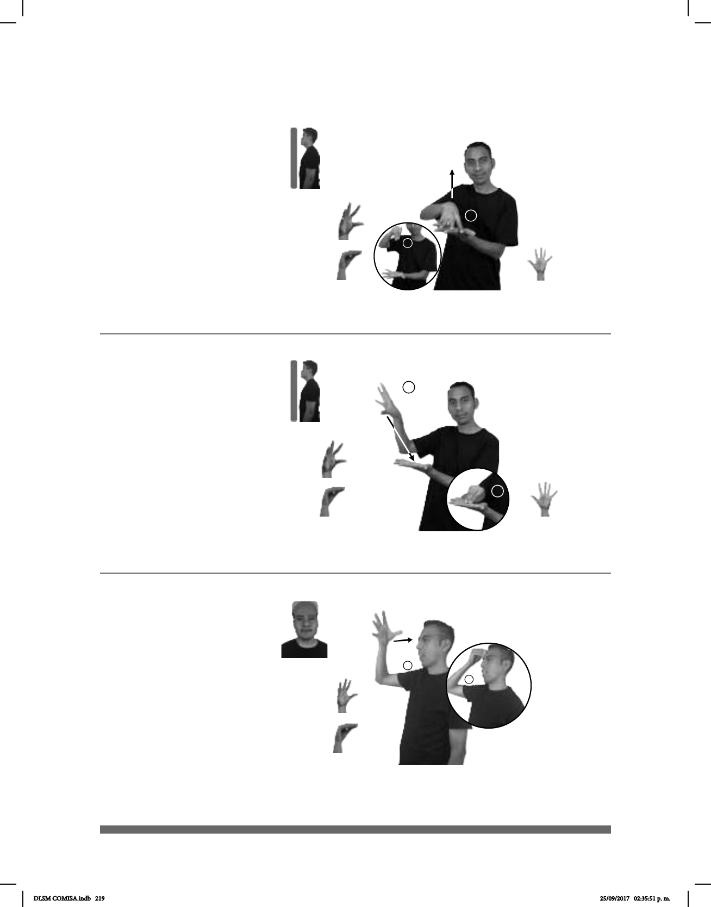

219
Seña: SB
MD seña que pasa de
5.4 a O.9, MB 5.1
MD palma hacia abajo.
MB palma hacia arriba.
La MD inicia sobre la MB
y termina a la altura del hombro, MB a
la altura del abdomen.
MD recto mientras el
pulgar se cierra contra los dedos de la
mano. MB recto.
v. tr. Hacer una fotocopia
de un documento.
1
2
(5-G 79)
SACAR-COPIA pro-TÚ DEBER
Debes sacar una copia.
Seña: SB
MD seña que pasa de 5.4 a
O.9, MB 5.1
MD la palma inicia hacia
afuera y termina hacia abajo. MB palma
hacia arriba.
La MD inicia a la altura de la
cabeza y termina sobre la MB. MB a la
altura del pecho.
La MD golpea la palma de
MB en línea recta mientras el pulgar toca los
dedos de la mano.
1. v. tr. En un examen escrito
reproducir fraudulentamente las respuestas
del examen de un compañero. 2. v. tr.
Reproducir textos, imágenes, sonidos u
objetos.
1
2
(5-G 80)
NIÑO
aqui
EXAMEN COPIAR MAESTRO+MUJER YA ella-DESCUBRIR-a-él
El niño copió en el examen y la maestra lo descubrió.
1
2
Seña: SM
Seña que pasa de
5.2 a O.9
Palma oblicua hacia
adentro y hacia la izquierda.
A la altura de la frente.
La mano golpea la
frente mientras el pulgar se cierra
contra los dedos.
v. tr. Ejecutar algo a
ejemplo o semejanza de otra cosa.
(5-G 81)
SIEMPRE pos-MI HERMANO+MUJER pos-SU AMIGO pro-DOS-DE-ELLOS
AHORA JUNTOS IMITAR pos-SU
de ella
CARÁCTER
Mi hermana y su amigo siempre están juntos, ahora ella imita su comportamiento.
DLSM COMISA.indb 219 25/09/2017 02:35:51 p. m.